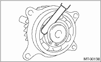

MANUAL TRANSMISSION AND DIFFERENTIAL(5MT) > Transfer Drive Gear
1. Bearing
Replace the bearings in the following cases.
• In case of broken or rusty bearings
• In case of worn or damaged bearings
• In the case that the bearing fails to turn smoothly or makes an abnormal noise when turned, even after gear oil lubrication.
2. Drive gear
Replace the drive gear in following case:
• If the drive gear tooth surface and shaft are excessively broken or damaged.
3. Measure the clearance between snap ring and inner race of ball bearing with a thickness gauge.
Clearance:
0.01 — 0.15 mm (0.0004 — 0.0059 in)

If the measured value is not within the specification, select a suitable snap ring from the table below and replace.
|
Snap ring (Outer-30) | |
|
Part number |
Thickness mm (in) |
|
805030041 |
1.53 (0.0602) |
|
805030042 |
1.65 (0.0650) |
|
805030043 |
1.77 (0.0697) |